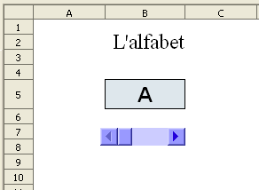
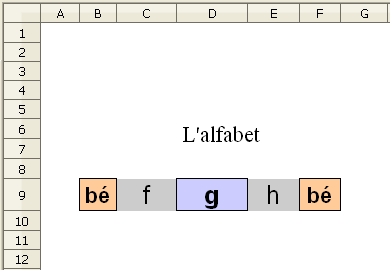

L'alfabet
Presentació gràfica de l'activitat

Funcions que es fan servir en aquesta activitat:
Objectiu de l'activitat:
Presentació de l'alfabet lletra a lletra mitjançant una barra de desplaçament.
Desenvolupament de l'activitat:
1 Obrir el calc i canvari el nom del Full1 pel de M4P1 alfabet
2. Fomatar la cel·la B5 com es veu en el gràfic de presentació.
3. Inserir un quadre de text on s'escrigui: “L'alfabet”
4. Fer servir una barra de desplaçament i enllaçar-la a la cel·la E1 seguint els següents passos:
-
Fer clic a la barra de desplaçament del Controls de formulari
-
Desplaçar el punter del ratolí a l'àrea de les cel·les i observar que aquest punter pren la forma d'una creueta
-
Fer clic amb el botó esquerra del ratolí i, sense deixar de prémer, desplaçar el punter i observar que es va creant un rectangle amb línea discontínua.
-
Quan es cregui que el tamany d'aquest rectangle sigui suficient, deixar de prémer el botó esquerre i es mostra la barra de desplaçament
Ara es tracta d'enllaçar aquesta barra de desplaçament amb una cel·la determinada
-
Clic a la barra de desplaçament creada per seleccionar-la.
-
Estant seleccionada, clic amb el botó dret i del menú contextual triar l'opció Control.
-
De la finestra que es mostra, fer clic a la solapa Dades i escriure E1 dintre de la casella corresponent a Cel·la enllaçada i tancar la finestra
-
Fer clic a la icona (mode de disseny activat) de la barra d'eines de Controls de formulari perquè es mostri així: (mode de disseny desactivat)
-
Havent fet el pas anterior, comprovar que en fer clic a l'extrem dret de la barra de desplaçament , es van mostrant números ascendents a la cel·la E1. En fer clic a l'extrem esquerre de la barra, es van mostrant números descendents a la cel·la E1
5. Fer que els valors mínim i màxim de desplaçament de la barra sigui 1 i 26 respectivament.
-
Fer clic a la icona (mode de disseny activat) per editar la barra de desplaçament
-
Fer clic a la barra de desplaçament amb el botó dret del ratolí i del menú comntextuakl triar Control
-
De la finestra que s'obre (Propietats: barra de desplaçament), fer clic a la solapa General i escriure 1 a la finestreta corresponent a Valor mínim de desplaçament. Després escriure 26 a la finestreta corresponent a Valor màxim de desplaçament
9. Extendre el contingut de la cel·la F1 fins a la cel·la F26.
10. Escriure l'alfabet en les cel·les del rang G1:G26.
-
Del menú, anar a Eines | Opcions | LibreOffice Calc | llistes d'ordenació | clic en Nou
-
Escriure la llista de l'alfabet (o copiar-la)a la finestra corresponent d'Entrades
-
Clic en Afegeix i clic en D'acord
14. Comprovar que l'activitat funcioni correctament fent clics als extrems de la barra de desplaçament i observant com augmenten o disminueixen el números de la cel·la E1
Per editar la barra de desplaçament, aquesta barra ha d'estar en mode de disseny activat
15. Protegir les cel·les que convingui.
16. Protegir la barra de desplaçament.
17. Fer no visibles les cel·les que convingui.
18. Desar el fitxer M4
Escriure la lletra anterior i posterior
Presentació gràfica de l'activitat

Funcions que es fan servir en aquesta activitat:
Objectiu de l'activitat:
Escriure la lletra anterior i la posterior a partir d'un determinada lletra.
Desenvolupament de l'activitat:
1. Obrir el fitxer M4 i canviar el nom de Full2 pel de M4P1 alfabet escriure.
2. Escriure a la cel·la B1: =SI(A1=0;ALEATENTRE(2;25))
4. Extendre la cel·la H5 fins la cel·la H30
5. Escriure a la cel·la I5 la lletra a
6. En cas que s'hagi fet la llista d'ordenació (alfabet) comentada al punt 10 de l'activitat M4P1 alfabet, llavors només caldrà extendre la cel·la I5 fins la cel·la I30 perquè es mostri la llista de l'alfabet. En cas que aquesta llista no estigui creada, caldrà torna a escriure-la o copiar-la del rang G1:G26 del full M4P1 alfabet.
7. Escriure a la cel·la D9: =CONSULTA(B1;H5:H30;I5:I30)
8. Escriure a la cel·la A9: =CONSULTA(B1-1;H5:H30;I5:I30)
12. Formatar les cel·les C9, D9 i E9 com es veu en el gràfic de presentació de l'activitat.
13. Fer una macro amb les següent funcions:
-
Esborrar el contingut de les cel·les C9 i D9
-
Assignar a la cel·la A1 el valor de 0
-
Que la cel·la C9 rebi el focus.
14. Crear un botó de prémer de Controls de formulari i assignar-li la macro feta anteriorment.
15. Validar la cel·la A1 per al valor 0.
16. Ocultar les cel·les que convingui.
17. Protegir les cel·les que convingui.
18. Comprovar que l'activitat funcioni correctament.
19. Desar el fitxer M4.
|
|

|
|